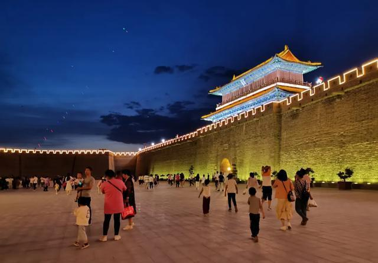
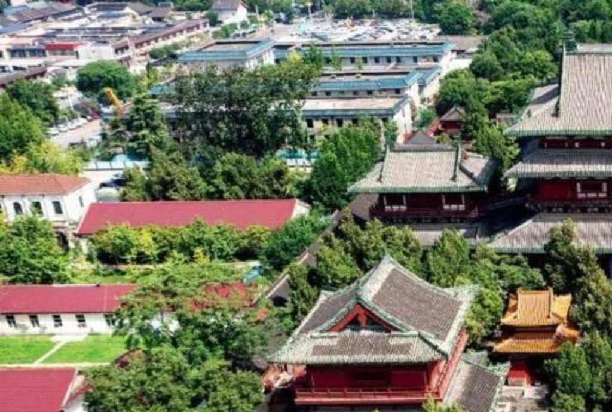
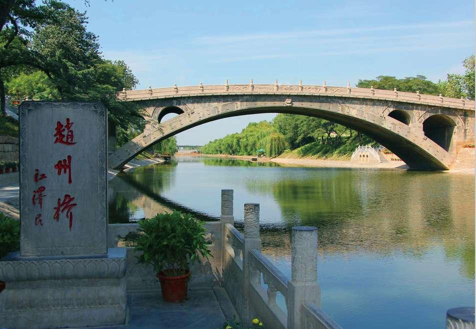
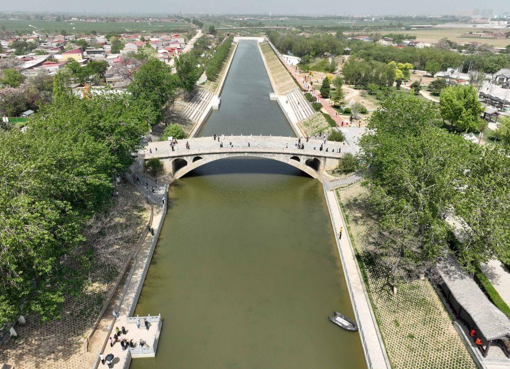
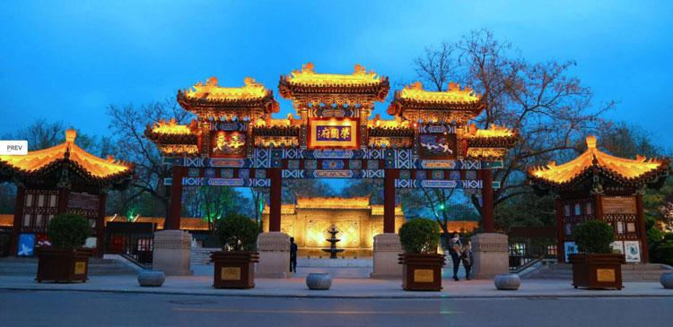
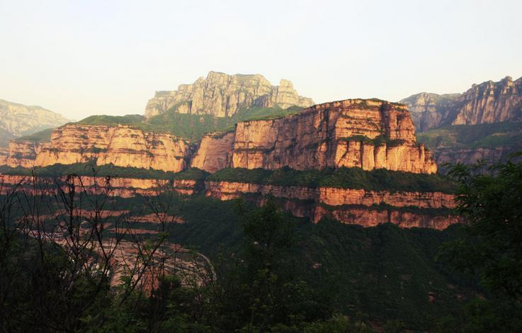
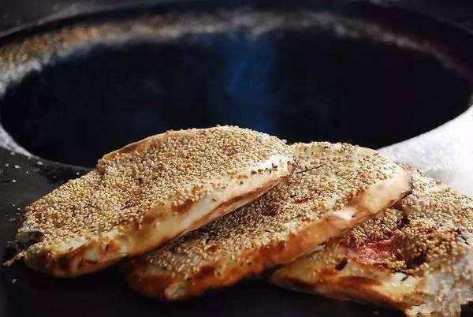
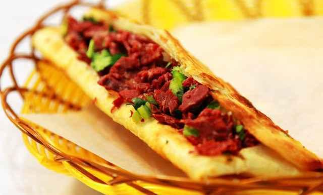
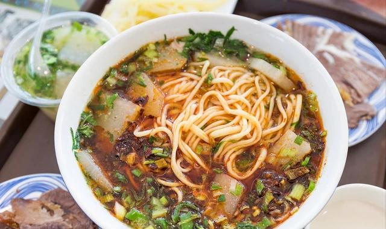
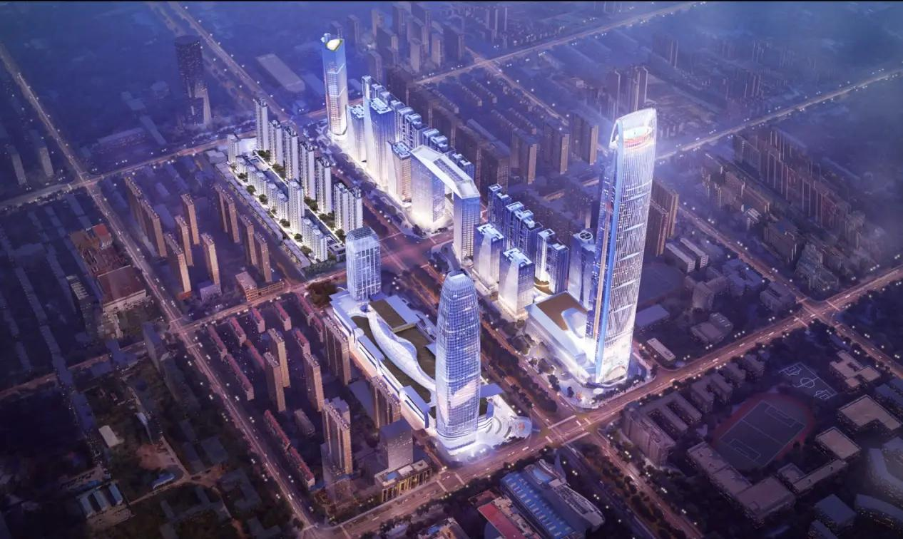

Premium Hometown Tourism Showcase
Hebei Province, China · 石家庄 · Shijiazhuang
Discover Shijiazhuang Where Heritage Meets New Energy
A city where ancient heritage meets modern vitality — from the timeless beauty of Zhengding Ancient City to the vibrant energy of a growing urban landscape.
Historic CoreZhengding, Zhaozhou Bridge, Xibaipo
Local FlavorSesame flatbread, noodles, northern street food
Urban PulseRiverfront spaces, transport, skyline growth
Scroll Down

The City
Capital of Hebei.
Heart of the North.
Shijiazhuang, the capital of Hebei Province, is a dynamic city in northern China. It serves as a key transportation hub while preserving deep cultural roots.
From historic architecture to modern development zones, the city reflects a unique blend of tradition and progress. Its story unfolds through ancient landmarks, warm local food, and a confident urban rhythm.

Culture & Heritage
The Yanzhao Spirit — Bold, Resilient, Timeless.
Shijiazhuang is deeply influenced by the rich Yanzhao culture, known for its strength and resilience. The region is home to ancient towns, historic temples, and revolutionary landmarks.
Walking through these places, visitors can feel the spirit of history blending seamlessly with everyday life, giving the city a sense of warmth, gravity, and character.
Ancient Memory
Traditional gates, temple compounds, and long-standing streets preserve the ceremonial beauty of northern Chinese architecture.
Living Culture
The city’s story is not frozen in museums. It continues in daily food, neighborhood rhythms, festivals, and local pride.
Historic Depth
From Zhengding to Xibaipo, Shijiazhuang offers places where the past remains visible, meaningful, and emotionally present.
Explore
Places That Stay With You
These views are not just beautiful. They reveal the emotional range of Shijiazhuang — historic, reflective, lively, and quietly grand.

Zhengding Ancient City
A historic city with over 1,600 years of history, Zhengding is famous for its ancient temples, towers, and traditional architecture. Its peaceful atmosphere and cultural depth make it one of the most iconic destinations near Shijiazhuang.

Ancient City Wall Night View
At night, the ancient city walls come alive with warm lights and lively crowds. This vibrant scene reflects both tradition and modern urban life, offering a memorable evening experience.

Zhaozhou Bridge
Built over 1,400 years ago, Zhaozhou Bridge is the oldest stone arch bridge in the world. Its elegant form and historical significance make it a masterpiece of ancient engineering.

Hutuo River Scenic Area
The Hutuo River area showcases the natural beauty of Shijiazhuang, with peaceful waterways, green parks, and spacious urban design. It is a perfect place for relaxation and slow travel.

Rongguofu Cultural Scenic Area
With ornate traditional gates and a theatrical atmosphere, this site adds elegance and imagination to the cultural side of the city’s travel experience.

Mountain Escapes Nearby
Beyond the city, dramatic mountain scenery offers another side of the region — expansive, peaceful, and ideal for visitors who want natural views alongside cultural landmarks.
Taste
Flavors That Define a City
Local food gives Shijiazhuang its warmth. These dishes feel honest, comforting, and deeply tied to everyday northern life.

Ganglu Shaobing
Baked Sesame FlatbreadA crispy sesame flatbread baked in a traditional clay oven. Its golden crust and rich aroma make it a beloved local snack.

Lvrou Huoshao
Donkey BurgerA famous northern Chinese street food made with tender donkey meat stuffed inside a crisp bun. Savory, juicy, and unforgettable.

Hebei Noodles
Rich Broth, Local ComfortWarm, flavorful noodles served with rich broth and toppings. This comforting dish reflects the simplicity and depth of local cuisine.
Today
Modern Shijiazhuang
Beyond its historical charm, Shijiazhuang is a rapidly developing modern city with confident growth and an increasingly polished urban image.
Connected & Accessible
As a major transportation center, the city moves efficiently through rail links, broad avenues, and practical urban planning. Its accessibility makes it an easy base for both cultural travel and modern city exploration.

Urban Energy at Night
From illuminated districts to expanding skylines, Shijiazhuang presents a forward-looking lifestyle that feels vibrant, balanced, and full of new possibility.


Why Visit Shijiazhuang
Some Cities Are Passed Through. This One Stays With You.
Shijiazhuang is more than a city — it is a journey through history, culture, and modern life. Whether you are exploring ancient architecture, enjoying local food, or experiencing urban energy, this city offers a unique and memorable experience.
Plan Your Journey